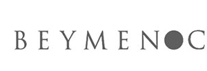
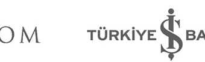
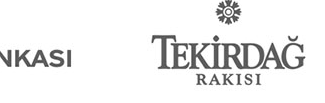
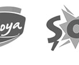
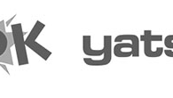
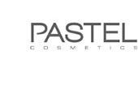
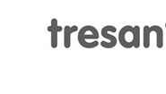
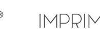
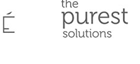

Farkımız
Pek çok stüdyo yapay zekayı üretim maliyetini düşürmek için kullanıyor. Biz farklı bir yol seçtik: yıllar içinde inşa ettiğimiz zanaatkâr birikimini, kendi tasarladığımız yapay zeka orkestrasyon altyapısıyla birleştirdik. Sonuç; sıradan bir otomasyon değil, sinematik kaliteden taviz vermeyen, marka standartlarınıza tam uyan ve geleneksel prodüksiyonun çok daha kısa süresinde teslim edilen içerik.
Dönüşümün Beş Temel Taşı









Çözümlerimiz
Yeteneklerimizi kullandığımız araçlara göre değil, çözmek istediğiniz iş sorununa göre paketledik.
Ölçülebilir İş Etkisi
Başarımızı teslim edilen dosya sayısıyla değil, müşterilerimizin kârlılığına sağladığımız elle tutulur katkıyla ölçüyoruz.
Konuşmaya Başlayalım →